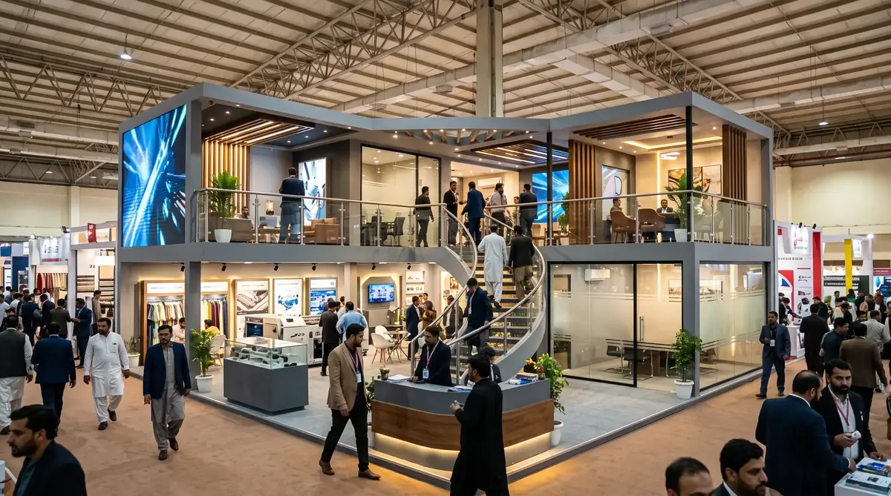

Custom kiosk manufacturer in Karachi
Malls, offices and Expo Centre events keep Karachi busy all year. Coastal humidity is hard on cheap board and bare metal, so we choose finishes that cope with it.
Custom kiosks
Touch kiosks, selfie kiosks, information counters and more. Built to your size, your brand and the screen you already picked, by the same team that builds our exhibition stalls.

Updated 21 Oct 2026The short answer
Trade Show Stall is a custom kiosk manufacturer in Pakistan. We design and build kiosks from scratch: the body, the branding, the lighting and the exact place where your screen, tablet, camera or printer sits. We work from Karachi, Lahore and Islamabad and we deliver and fit kiosks in other cities too. If you are still at the idea stage, that is completely fine. Most people who message us are.
To get started we only need three things: where the kiosk will stand, which screen or device goes inside, and the date you need it. Everything else we can work out together.
Before you start
A kiosk looks easy. One screen, one box, one logo. Then the questions begin. Will the screen overheat inside the box? What happens when the power goes? Will it even fit through the mall's service lift?
Nobody mentions these things in the first meeting, and they are the reason many kiosks look great on launch day and give trouble by week three. We would rather you hear about them from us now than find out at your own launch, with people watching.
So this page is part service page and part honest guide. Take what is useful. If something does not match your situation, just ask us and we will tell you what we think.
What we build
Every kiosk below is made to order. Sizes, colours, materials and fittings are decided with you, not picked from a catalogue.
A standing unit built around a touchscreen. People use it to browse a menu, search a catalogue, fill a feedback form or find a store. Portrait screens from about 21 to 43 inches are the usual choice. Tell us your screen model and we build the cabinet around it, with air flow behind it so it does not cook itself.
Made for brand activations, launches, weddings and mall events. The cabinet holds the camera and screen at a comfortable height, with soft lighting built in so faces look good and people actually share the photo. We build the structure, you choose the photo software, and we make them work together.
For offices, campuses, hospitals, hotels and event venues. A clear screen, a stable base and a design that guides people without a staff member standing next to it all day.
Ordering, bill payment, ticketing or form collection. These need space inside for a printer, card reader or scanner, so the inside layout matters more than the outer shape. We plan the layout first and shape the shell after.
Short term kiosks for product launches, sampling and brand counters in malls and exhibitions. Made to look good from every side and designed so your team can set it up and pack it away without drama.
For conferences, exhibitions, corporate events and training sessions. Quick to use when there is a line behind you, with room for a scanner, a badge printer or a tablet.
A tall display that shows your offers or schedule on a loop. No touch needed, so the build is simpler and the focus goes on stability and a clean finish.
A small kiosk that sits inside or beside your exhibition stall for demos, lead capture or product trials. If you are building a full stall too, we match the two so they look like one brand.
Building a full stall as well? Read about exhibition stall design in Pakistan or see how a modular exhibition booth can carry a kiosk at its front.
What most people forget
Screens and small computers make heat, and a closed box traps it. In a Karachi or Lahore summer even an air conditioned mall corridor gets warm near the entrance. A good kiosk has air flow behind the screen, with vents or a quiet fan, and a back panel you can open.
Load shedding and sudden voltage drops are normal here, and a screen that restarts in the middle of a customer's order is frustrating. If your kiosk has to run all day, plan a small UPS inside the base. We leave the space and a clean cable path for it.
A normal indoor screen is often around 300 to 450 nits, which looks washed out near a window or entrance. Bright spots need a high brightness display. Tell us where the kiosk will stand and we will tell you if this is something to worry about.
Somebody will have to restart it, change paper or clean the glass. A lockable back door or side panel means your team does not have to unscrew anything in front of customers.
As a rough rule, keep the main touch area between waist and chest height, around 100 to 140 cm from the floor, so a child, a tall person and someone in a wheelchair can all use it. Too high or too low and people simply walk away.
Measure the door, the lift and the passage before you order. Many malls and expo halls have size limits and want design approval first. If the kiosk will travel between cities or events, a knock down design that packs flat saves money and stress.
Public touchscreens get messy fast. Smooth laminate, powder coating and stainless steel wipe clean, while rough textures hold dirt. Pick a finish you will be happy to clean every morning.
Not sure about any of these? That is a normal place to be. Send us a photo of the spot where the kiosk will stand and we will point out what to watch for.
Materials
| Material | Good for | Keep in mind |
|---|---|---|
| Mild steel with powder coating | Strong, stable kiosks for malls and permanent spots | Heavier to move, and a thin coat of paint will show rust marks over time |
| Stainless steel | Busy public places and sheltered outdoor spots | Costs more, and a shiny finish shows every fingerprint |
| Acrylic | Glossy lit panels, logos and selfie kiosks | Scratches easily, so it needs careful handling in transport |
| MDF with laminate or veneer | Event and exhibition kiosks used indoors | Does not like water, and edges chip after hard knocks |
| Aluminium composite panel (ACP) | A clean modern look, light weight, printed or coloured panels | Dents if hit, so corners need protection |
| Aluminium extrusion frame | Modular kiosks that pack flat and travel | Fewer shape options than fully custom fabrication |
Many good kiosks mix two or three of these, for example a steel frame with acrylic panels and a laminate base. We suggest the mix after hearing where your kiosk will live. You can read more about how we work with these materials on our exhibition stall fabrication page, and about finishing and graphics under exhibition branding.
Choosing
If you only need to show one product, collect leads or take registrations, a kiosk can do the job with less space and less to manage. If you need to meet clients, seat people and show a full range, you need a stall.
A lot of exhibitors end up doing both: a stall for the meeting space and a small touch or selfie kiosk at the front to pull people in. This works well at technology shows. If you are looking at Gitech or other upcoming shows, our Karachi exhibitions calendar for 2026 and 2027 lists the dates.
How we work
Where will it stand, who will use it, which device goes inside and when do you need it. A voice note on WhatsApp is enough to start.
You see a 3D render before anything is cut, so changes cost nothing at this stage. 3D booth design.
No vague totals. You know what the price covers before you say yes.
Fabrication, painting and fitting happen in our own units, so we can fix small things quickly. Fabrication in Pakistan.
Our crew delivers, places and checks it works in the real space. Stall installation.
You will always speak to the people who build it. Learn more about our team or look at work we have completed across Pakistan.
Across Pakistan
Our units are in Karachi, Lahore and Islamabad. From there we deliver and fit kiosks in Karachi, Lahore, Islamabad, Rawalpindi, Faisalabad, Multan, Peshawar, Quetta, Sialkot, Gujranwala, Hyderabad and Bahawalpur. If your city is not on this list, message us. Distance is a planning question for us, not a reason to say no.
Malls, offices and Expo Centre events keep Karachi busy all year. Coastal humidity is hard on cheap board and bare metal, so we choose finishes that cope with it.
Retail launches, weddings and brand activations are common here. Summers are hot, so air flow behind the screen matters more than most people expect.
Conferences, institutions and corporate events. Registration and information kiosks suit that kind of crowd, and a clean simple design usually works best.
A good fit for textile and industry shows, where a small lead capture kiosk can sit right beside your stall.
Trade fairs and retail launches. The kiosk is built at one of our units and fitted on site by our own crew.
Smaller events and showrooms. We plan the packing and transport early so the kiosk arrives clean and ready to fit.
Delivered from our nearest unit and fitted by our crew. We check road and access details before the kiosk leaves the workshop.
Distance changes the planning here, not the quality. We pack carefully and agree dates early so nothing is rushed on the road.
Product display kiosks suit exporters and manufacturers who want to show samples at fairs, offices and showrooms.
Easy to reach from our Lahore unit. Good for factory showrooms, retail counters and event kiosks.
A short road trip from our Karachi unit, so delivery is simple and we can fix small things on site if needed.
Questions
Yes. We design and build custom kiosks in our own units in Karachi, Lahore and Islamabad, and we deliver and fit them in other cities too. The same team also builds our exhibition stalls, so a kiosk and a stall can be made to match.
Touch kiosks, selfie kiosks, information and wayfinding kiosks, self service kiosks, promotional and product display kiosks, registration and check in kiosks, digital signage stands and small kiosks for exhibition stalls. If your idea is not on that list, describe it and we will tell you honestly if we can build it.
Yes, and this is the best way to do it. Send us the model of your screen, tablet, printer or card reader and we design the inside to fit it properly, with air flow, cable paths and a back panel you can open. Building the box first and hoping the device fits is where most problems start.
We make the selfie kiosk itself: the cabinet, the lighting, the camera and screen position and the branding. The photo software is normally a separate app that you choose, and we build the kiosk around it. If you are still deciding, tell us what you want the guest to see and we will talk it through with you.
It depends, and we would rather say that than give you a number that means nothing. Size, material, screen housing, lighting, printing and how many pieces you need all change the price. A simple promotional kiosk and a self service kiosk with a printer inside are very different projects. Send us a rough idea and we reply with a clear estimate. If you need several identical kiosks, tell us at the start.
For most custom kiosks, plan on a few weeks. Simple designs can be quicker, and special shapes, glossy finishes or imported parts take longer. Tell us your launch date and we will say honestly whether it is realistic, instead of promising and missing it.
Yes. We build in Karachi, Lahore and Islamabad and deliver across Pakistan, including Rawalpindi, Faisalabad, Multan, Peshawar, Quetta, Sialkot, Gujranwala, Hyderabad and Bahawalpur. Distance mostly affects packing and timing, so tell us your city early.
Yes, if it is designed for it from day one. A kiosk that splits into parts, has protected corners and fits through ordinary doors and lifts can travel between events and cities. Tell us how often it will move and we design for that.
Yes. If you are exhibiting, we can build the kiosk and the stall together so the colours, materials and lighting look like one brand. Many exhibitors keep a small touch or selfie kiosk at the front of the stall to draw people in.
Tell us where the kiosk will stand and what it should do. We will reply by call or WhatsApp and tell you honestly what we would build, what to avoid and what to expect. There is no pressure to order anything.
Share your kiosk ideaPrefer to talk now? WhatsApp us or call 0335 2062771.